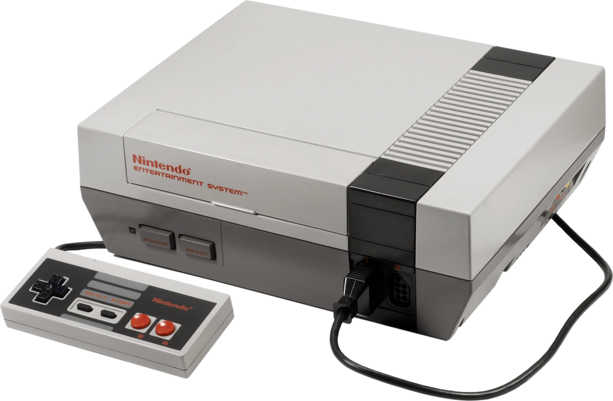
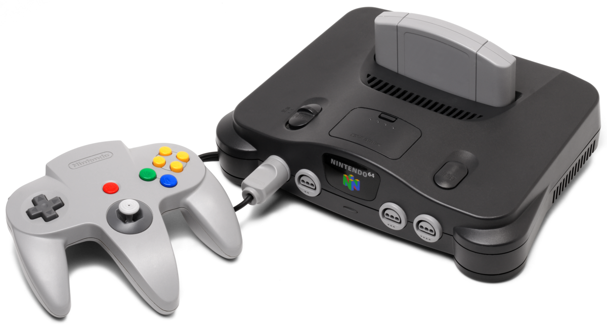
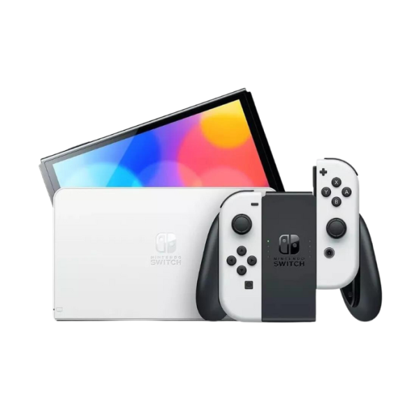

NINTENDO ENTERTAINMENT SYSTEM:
Está considerada como la videoconsola más exitosa de su época y contribuyó a revitalizar de forma significativa la industria estadounidense de los videojuegos, la cual había sufrido previamente una debacle financiera en 1983 que ocasionó que varias empresas especializadas quebraran, además de establecer el nivel estándar para consolas posteriores en aspectos primordiales como el diseño de cada juego y planteamiento de mandos. Asimismo, a partir de esta consola Nintendo estableció un modelo de negocios estandarizado en la era contemporánea y referente a la licencia de desarrollo de software a terceros. Durante su producción, se desarrollaron numerosos videojuegos que dieron origen a famosas series de videojuegos. Entre ellos se incluyen: Super Mario Bros., The Legend of Zelda, Metroid, Mega Man, Final Fantasy, Metal Gear y Castlevania.
NINTENDO 64:
Nintendo 64 es la cuarta videoconsola de sobremesa producida por Nintendo, desarrollada para suceder a la Super Nintendo. Fue la primera consola concebida para dar el salto del 2D al 3D. Compitió en el mercado de la quinta generación con Saturn de Sega y PlayStation (consola) de Sony; esta última, creada a partir de diseños descartados previamente por Nintendo. Incorporó en su arquitectura un procesador principal de 64 bits. El soporte de almacenamiento de los juegos era en forma de cartuchos, la mayoría de ellos con memoria interna. El uso de este tipo de almacenamiento le supuso una seria desventaja comercial frente a sus competidores, ya que encarecía los costes de producción lo que aumentaba el precio final y además era de una capacidad de almacenamiento menor al de un CD-ROM. Entre sus juegos se encuentran títulos legendarios como : Super Mario 64, La Leyenda de Zelda: La Ocarina del tiempo, 007: Goldeneye y Conker’s Bad Fur Day.
NINTENDO Wii:

Nintendo Wii es la sexta videoconsola descontinuada producida por Nintendo y estrenada el 19 de noviembre de 2006 en Norteamérica y el 8 de diciembre del mismo año en Europa. Perteneciente a la séptima generación de videoconsolas, es la sucesora directa de GameCube y compitió con la Xbox 360 de Microsoft y la PlayStation 3 de Sony. Nintendo afirmó que Wii está destinada a una audiencia más amplia a diferencia de las otras dos consolas. Desde su debut, la consola superó a sus competidoras en cuanto a ventas, y, en diciembre de 2009, rompió el récord como la consola más vendida en un solo mes en Estados Unidos. La característica más distintiva de la consola fue su mando inalámbrico, el Wii Remote, el cual se usaba como un dispositivo de mano con el que se podía apuntar, además de que detectaba movimientos en un plano tridimensional. Otra de sus peculiaridades era el servicio WiiConnect24, que permitía recibir mensajes y actualizaciones a través de Internet en modo de espera. Adicionalmente, la consola puede sincronizarse con la portátil Nintendo DS, lo cual permite que Wii aproveche la pantalla táctil de la Nintendo DS como mando alternativo. Entre los títulos que contaba se encontraban: Super Mario Galaxy, La Leyenda de Zelda: La Princesa del Crepusculo y Espada hacia el cielo, Super Smash Bros.: Brawl y Epic Mickey.
NINTENDO Switch:
Nintendo Switch una consola de videojuegos desarrollada por Nintendo. Conocida en el desarrollo por su nombre código «NX», se dio a conocer en octubre de 2016 y fue lanzada mundialmente el 3 de marzo de 2017. Nintendo considera a Switch una consola híbrida. Se puede utilizar como consola de sobremesa con la unidad principal insertada en una estación de acoplamiento para conectarla con un televisor. Alternativamente, puede ser extraída de la base y utilizada de forma similar a una tableta a través de su pantalla táctil o colocada sobre una superficie gracias a su soporte plástico integrado siendo así visible por varios jugadores. Entre los títulos de esta consola se encuentran: Super Mario oddisey, Super Mario Bros. Wonder, La Leyenda de Zelda: Breath of the wild y Tears of the kingdom.